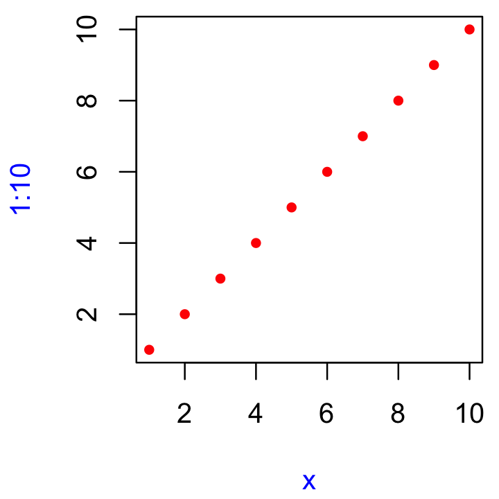

6 Functions
6.1 Introduction
If youre reading this book, youve probably already created many R functions and know how to use them to reduce duplication in your code. In this chapter, youll learn how to turn that informal, working knowledge into more rigorous, theoretical understanding. And while youll see some interesting tricks and techniques along the way, keep in mind that what youll learn here will be important for understanding the more advanced topics discussed later in the book.
Quiz
Answer the following questions to see if you can safely skip this chapter. You can find the answers in Section 6.9.
What are the three components of a function?
What does the following code return?
How would you usually write this code?
How could you make this call easier to read?
Does the following code throw an error when executed? Why or why not?
What is an infix function? How do you write it? Whats a replacement function? How do you write it?
How do you ensure that cleanup action occurs regardless of how a function exits?
Outline
Section 6.2 describes the basics of creating a function, the three main components of a function, and the exception to many function rules: primitive functions (which are implemented in C, not R).
Section 6.3 discusses the strengths and weaknesses of the three forms of function composition commonly used in R code.
Section 6.4 shows you how R finds the value associated with a given name, i.e.the rules of lexical scoping.
Section 6.5 is devoted to an important property of function arguments: they are only evaluated when used for the first time.
Section 6.6 discusses the special
...argument, which allows you to pass on extra arguments to another function.Section 6.7 discusses the two primary ways that a function can exit, and how to define an exit handler, code that is run on exit, regardless of what triggers it.
Section 6.8 shows you the various ways in which R disguises ordinary function calls, and how you can use the standard prefix form to better understand whats going on.
6.2 Function fundamentals
To understand functions in R you need to internalise two important ideas:
- Functions can be broken down into three components: arguments, body, and environment.
There are exceptions to every rule, and in this case, there is a small selection of primitive base functions that are implemented purely in C.
- Functions are objects, just as vectors are objects.
6.2.1 Function components
A function has three parts:
The
formals(), the list of arguments that control how you call the function.The
body(), the code inside the function.The
environment(), the data structure that determines how the function finds the values associated with the names.
While the formals and body are specified explicitly when you create a function, the environment is specified implicitly, based on where you defined the function. The function environment always exists, but it is only printed when the function isnt defined in the global environment.
f02 <- function(x, y) {
# A comment
x + y
}
formals(f02)
#> $x
#>
#>
#> $y
body(f02)
#> {
#> x + y
#> }
environment(f02)
#> <environment: R_GlobalEnv>Ill draw functions as in the following diagram. The black dot on the left is the environment. The two blocks to the right are the function arguments. I wont draw the body, because its usually large, and doesnt help you understand the shape of the function.

Like all objects in R, functions can also possess any number of additional attributes(). One attribute used by base R is srcref, short for source reference. It points to the source code used to create the function. The srcref is used for printing because, unlike body(), it contains code comments and other formatting.
6.2.2 Primitive functions
There is one exception to the rule that a function has three components. Primitive functions, like sum() and [, call C code directly.
They have either type builtin or type special.
These functions exist primarily in C, not R, so their formals(), body(), and environment() are all NULL:
Primitive functions are only found in the base package. While they have certain performance advantages, this benefit comes at a price: they are harder to write. For this reason, R-core generally avoids creating them unless there is no other option.
6.2.3 First-class functions
Its very important to understand that R functions are objects in their own right, a language property often called first-class functions. Unlike in many other languages, there is no special syntax for defining and naming a function: you simply create a function object (with function) and bind it to a name with <-:

While you almost always create a function and then bind it to a name, the binding step is not compulsory. If you choose not to give a function a name, you get an anonymous function. This is useful when its not worth the effort to figure out a name:
lapply(mtcars, function(x) length(unique(x)))
Filter(function(x) !is.numeric(x), mtcars)
integrate(function(x) sin(x) ^ 2, 0, pi)A final option is to put functions in a list:
In R, youll often see functions called closures. This name reflects the fact that R functions capture, or enclose, their environments, which youll learn more about in Section 7.4.2.
6.2.4 Invoking a function
You normally call a function by placing its arguments, wrapped in parentheses, after its name: mean(1:10, na.rm = TRUE). But what happens if you have the arguments already in a data structure?
You can instead use do.call(): it has two arguments. The function to call, and a list containing the function arguments:
Well come back to this idea in Section 19.6.
6.2.5 Exercises
Given a name, like
"mean",match.fun()lets you find a function. Given a function, can you find its name? Why doesnt that make sense in R?Its possible (although typically not useful) to call an anonymous function. Which of the two approaches below is correct? Why?
A good rule of thumb is that an anonymous function should fit on one line and shouldnt need to use
{}. Review your code. Where could you have used an anonymous function instead of a named function? Where should you have used a named function instead of an anonymous function?What function allows you to tell if an object is a function? What function allows you to tell if a function is a primitive function?
This code makes a list of all functions in the base package.
Use it to answer the following questions:
Which base function has the most arguments?
How many base functions have no arguments? Whats special about those functions?
How could you adapt the code to find all primitive functions?
What are the three important components of a function?
When does printing a function not show the environment it was created in?
6.3 Function composition
Base R provides two ways to compose multiple function calls. For example, imagine you want to compute the population standard deviation using sqrt() and mean() as building blocks:
You either nest the function calls:
Or you save the intermediate results as variables:
The magrittr package (Bache and Wickham 2014) provides a third option: the binary operator %>%, which is called the pipe and is pronounced as and then.
x %>% f() is equivalent to f(x); x %>% f(y) is equivalent to f(x, y). The pipe allows you to focus on the high-level composition of functions rather than the low-level flow of data; the focus is on whats being done (the verbs), rather than on whats being modified (the nouns). This style is common in Haskell and F#, the main inspiration for magrittr, and is the default style in stack based programming languages like Forth and Factor.
Each of the three options has its own strengths and weaknesses:
Nesting,
f(g(x)), is concise, and well suited for short sequences. But longer sequences are hard to read because they are read inside out and right to left. As a result, arguments can get spread out over long distances creating the Dagwood sandwich problem.Intermediate objects,
y <- f(x); g(y), requires you to name intermediate objects. This is a strength when objects are important, but a weakness when values are truly intermediate.Piping,
x %>% f() %>% g(), allows you to read code in straightforward left-to-right fashion and doesnt require you to name intermediate objects. But you can only use it with linear sequences of transformations of a single object. It also requires an additional third party package and assumes that the reader understands piping.
Most code will use a combination of all three styles. Piping is more common in data analysis code, as much of an analysis consists of a sequence of transformations of an object (like a data frame or plot). I tend to use piping infrequently in packages; not because it is a bad idea, but because its often a less natural fit.
6.4 Lexical scoping
In Chapter 2, we discussed assignment, the act of binding a name to a value. Here well discuss scoping, the act of finding the value associated with a name.
The basic rules of scoping are quite intuitive, and youve probably already internalised them, even if you never explicitly studied them. For example, what will the following code return, 10 or 20?25
In this section, youll learn the formal rules of scoping as well as some of its more subtle details. A deeper understanding of scoping will help you to use more advanced functional programming tools, and eventually, even to write tools that translate R code into other languages.
R uses lexical scoping26: it looks up the values of names based on how a function is defined, not how it is called. Lexical here is not the English adjective that means relating to words or a vocabulary. Its a technical CS term that tells us that the scoping rules use a parse-time, rather than a run-time structure.
Rs lexical scoping follows four primary rules:
- Name masking
- Functions versus variables
- A fresh start
- Dynamic lookup
6.4.1 Name masking
The basic principle of lexical scoping is that names defined inside a function mask names defined outside a function. This is illustrated in the following example.
If a name isnt defined inside a function, R looks one level up.
x <- 2
g03 <- function() {
y <- 1
c(x, y)
}
g03()
#> [1] 2 1
# And this doesn't change the previous value of y
y
#> [1] 20The same rules apply if a function is defined inside another function. First, R looks inside the current function. Then, it looks where that function was defined (and so on, all the way up to the global environment). Finally, it looks in other loaded packages.
Run the following code in your head, then confirm the result by running the code.27
The same rules also apply to functions created by other functions, which I call manufactured functions, the topic of Chapter 10.
6.4.2 Functions versus variables
In R, functions are ordinary objects. This means the scoping rules described above also apply to functions:
However, when a function and a non-function share the same name (they must, of course, reside in different environments), applying these rules gets a little more complicated. When you use a name in a function call, R ignores non-function objects when looking for that value. For example, in the code below, g09 takes on two different values:
For the record, using the same name for different things is confusing and best avoided!
6.4.3 A fresh start
What happens to values between invocations of a function? Consider the example below. What will happen the first time you run this function? What will happen the second time?28 (If you havent seen exists() before, it returns TRUE if theres a variable with that name and returns FALSE if not.)
You might be surprised that g11() always returns the same value. This happens because every time a function is called a new environment is created to host its execution. This means that a function has no way to tell what happened the last time it was run; each invocation is completely independent. Well see some ways to get around this in Section 10.2.4.
6.4.4 Dynamic lookup
Lexical scoping determines where, but not when to look for values. R looks for values when the function is run, not when the function is created. Together, these two properties tell us that the output of a function can differ depending on the objects outside the functions environment:
This behaviour can be quite annoying. If you make a spelling mistake in your code, you wont get an error message when you create the function. And depending on the variables defined in the global environment, you might not even get an error message when you run the function.
To detect this problem, use codetools::findGlobals(). This function lists all the external dependencies (unbound symbols) within a function:
To solve this problem, you can manually change the functions environment to the emptyenv(), an environment which contains nothing:
The problem and its solution reveal why this seemingly undesirable behaviour exists: R relies on lexical scoping to find everything, from the obvious, like mean(), to the less obvious, like + or even {. This gives Rs scoping rules a rather beautiful simplicity.
6.4.5 Exercises
What does the following code return? Why? Describe how each of the three
cs is interpreted.What are the four principles that govern how R looks for values?
What does the following function return? Make a prediction before running the code yourself.
6.5 Lazy evaluation
In R, function arguments are lazily evaluated: theyre only evaluated if accessed. For example, this code doesnt generate an error because x is never used:
This is an important feature because it allows you to do things like include potentially expensive computations in function arguments that will only be evaluated if needed.
6.5.1 Promises
Lazy evaluation is powered by a data structure called a promise, or (less commonly) a thunk. Its one of the features that makes R such an interesting programming language (well return to promises again in Section 20.3).
A promise has three components:
An expression, like
x + y, which gives rise to the delayed computation.An environment where the expression should be evaluated, i.e.the environment where the function is called. This makes sure that the following function returns 11, not 101:
This also means that when you do assignment inside a call to a function, the variable is bound outside of the function, not inside of it.
A value, which is computed and cached the first time a promise is accessed when the expression is evaluated in the specified environment. This ensures that the promise is evaluated at most once, and is why you only see Calculating printed once in the following example.
You cannot manipulate promises with R code. Promises are like a quantum state: any attempt to inspect them with R code will force an immediate evaluation, making the promise disappear. Later, in Section 20.3, youll learn about quosures, which convert promises into an R object where you can easily inspect the expression and the environment.
6.5.2 Default arguments
Thanks to lazy evaluation, default values can be defined in terms of other arguments, or even in terms of variables defined later in the function:
Many base R functions use this technique, but I dont recommend it. It makes the code harder to understand: to predict what will be returned, you need to know the exact order in which default arguments are evaluated.
The evaluation environment is slightly different for default and user supplied arguments, as default arguments are evaluated inside the function. This means that seemingly identical calls can yield different results. Its easiest to see this with an extreme example:
6.5.3 Missing arguments
To determine if an arguments value comes from the user or from a default, you can use missing():
h06 <- function(x = 10) {
list(missing(x), x)
}
str(h06())
#> List of 2
#> $ : logi TRUE
#> $ : num 10
str(h06(10))
#> List of 2
#> $ : logi FALSE
#> $ : num 10missing() is best used sparingly, however. Take sample(), for example. How many arguments are required?
It looks like both x and size are required, but if size is not supplied, sample() uses missing() to provide a default. If I were to rewrite sample, Id use an explicit NULL to indicate that size is not required but can be supplied:
sample <- function(x, size = NULL, replace = FALSE, prob = NULL) {
if (is.null(size)) {
size <- length(x)
}
x[sample.int(length(x), size, replace = replace, prob = prob)]
}With the binary pattern created by the %||% infix function, which uses the left side if its not NULL and the right side otherwise, we can further simplify sample():
`%||%` <- function(lhs, rhs) {
if (!is.null(lhs)) {
lhs
} else {
rhs
}
}
sample <- function(x, size = NULL, replace = FALSE, prob = NULL) {
size <- size %||% length(x)
x[sample.int(length(x), size, replace = replace, prob = prob)]
}Because of lazy evaluation, you dont need to worry about unnecessary computation: the right side of %||% will only be evaluated if the left side is NULL.
6.5.4 Exercises
What important property of
&&makesx_ok()work?x_ok <- function(x) { !is.null(x) && length(x) == 1 && x > 0 } x_ok(NULL) #> [1] FALSE x_ok(1) #> [1] TRUE x_ok(1:3) #> [1] FALSEWhat is different with this code? Why is this behaviour undesirable here?
What does this function return? Why? Which principle does it illustrate?
What does this function return? Why? Which principle does it illustrate?
In
hist(), the default value ofxlimisrange(breaks), the default value forbreaksis"Sturges", andExplain how
hist()works to get a correctxlimvalue.Explain why this function works. Why is it confusing?
How many arguments are required when calling
library()?
6.6 ... (dot-dot-dot)
Functions can have a special argument ... (pronounced dot-dot-dot). With it, a function can take any number of additional arguments. In other programming languages, this type of argument is often called varargs (short for variable arguments), and a function that uses it is said to be variadic.
You can also use ... to pass those additional arguments on to another function.
i01 <- function(y, z) {
list(y = y, z = z)
}
i02 <- function(x, ...) {
i01(...)
}
str(i02(x = 1, y = 2, z = 3))
#> List of 2
#> $ y: num 2
#> $ z: num 3Using a special form, ..N, its possible (but rarely useful) to refer to elements of ... by position:
i03 <- function(...) {
list(first = ..1, third = ..3)
}
str(i03(1, 2, 3))
#> List of 2
#> $ first: num 1
#> $ third: num 3More useful is list(...), which evaluates the arguments and stores them in a list:
(See also rlang::list2() to support splicing and to silently ignore trailing commas, and rlang::enquos() to capture unevaluated arguments, the topic of [quasiquotation].)
There are two primary uses of ..., both of which well come back to later in the book:
If your function takes a function as an argument, you want some way to pass additional arguments to that function. In this example,
lapply()uses...to passna.rmon tomean():x <- list(c(1, 3, NA), c(4, NA, 6)) str(lapply(x, mean, na.rm = TRUE)) #> List of 2 #> $ : num 2 #> $ : num 5Well come back to this technique in Section 9.2.3.
If your function is an S3 generic, you need some way to allow methods to take arbitrary extra arguments. For example, take the
print()function. Because there are different options for printing depending on the type of object, theres no way to pre-specify every possible argument and...allows individual methods to have different arguments:Well come back to this use of
...in Section 13.4.3.
Using ... comes with two downsides:
When you use it to pass arguments to another function, you have to carefully explain to the user where those arguments go. This makes it hard to understand what you can do with functions like
lapply()andplot().A misspelled argument will not raise an error. This makes it easy for typos to go unnoticed:
6.6.1 Exercises
Explain the following results:
Explain how to find the documentation for the named arguments in the following function call:

Why does
plot(1:10, col = "red")only colour the points, not the axes or labels? Read the source code ofplot.default()to find out.
6.7 Exiting a function
Most functions exit in one of two ways29: they either return a value, indicating success, or they throw an error, indicating failure. This section describes return values (implicit versus explicit; visible versus invisible), briefly discusses errors, and introduces exit handlers, which allow you to run code when a function exits.
6.7.1 Implicit versus explicit returns
There are two ways that a function can return a value:
Implicitly, where the last evaluated expression is the return value:
Explicitly, by calling
return():
6.7.2 Invisible values
Most functions return visibly: calling the function in an interactive context prints the result.
However, you can prevent automatic printing by applying invisible() to the last value:
To verify that this value does indeed exist, you can explicitly print it or wrap it in parentheses:
Alternatively, you can use withVisible() to return the value and a visibility flag:
The most common function that returns invisibly is <-:
This is what makes it possible to chain assignments:
In general, any function called primarily for a side effect (like <-, print(), or plot()) should return an invisible value (typically the value of the first argument).
6.7.3 Errors
If a function cannot complete its assigned task, it should throw an error with stop(), which immediately terminates the execution of the function.
An error indicates that something has gone wrong, and forces the user to deal with the problem. Some languages (like C, Go, and Rust) rely on special return values to indicate problems, but in R you should always throw an error. Youll learn more about errors, and how to handle them, in Chapter 8.
6.7.4 Exit handlers
Sometimes a function needs to make temporary changes to the global state. But having to cleanup those changes can be painful (what happens if theres an error?). To ensure that these changes are undone and that the global state is restored no matter how a function exits, use on.exit() to set up an exit handler. The following simple example shows that the exit handler is run regardless of whether the function exits normally or with an error.
j06 <- function(x) {
cat("Hello\n")
on.exit(cat("Goodbye!\n"), add = TRUE)
if (x) {
return(10)
} else {
stop("Error")
}
}
j06(TRUE)
#> Hello
#> Goodbye!
#> [1] 10
j06(FALSE)
#> Hello
#> Error in j06(FALSE): Error
#> Goodbye!on.exit() is useful because it allows you to place clean-up code directly next to the code that requires clean-up:
cleanup <- function(dir, code) {
old_dir <- setwd(dir)
on.exit(setwd(old_dir), add = TRUE)
old_opt <- options(stringsAsFactors = FALSE)
on.exit(options(old_opt), add = TRUE)
}Coupled with lazy evaluation, this creates a very useful pattern for running a block of code in an altered environment:
with_dir <- function(dir, code) {
old <- setwd(dir)
on.exit(setwd(old), add = TRUE)
force(code)
}
getwd()
#> [1] "/Users/zihan/adv-r"
with_dir("~", getwd())
#> [1] "/Users/zihan"The use of force() isnt strictly necessary here as simply referring to code will force its evaluation. However, using force() makes it very clear that we are deliberately forcing the execution. Youll learn other uses of force() in Chapter 10.
The withr package (Hester et al. 2018) provides a collection of other functions for setting up a temporary state.
In R 3.4 and earlier, on.exit() expressions are always run in order of creation:
j08 <- function() {
on.exit(message("a"), add = TRUE)
on.exit(message("b"), add = TRUE)
}
j08()
#> a
#> bThis can make cleanup a little tricky if some actions need to happen in a specific order; typically you want the most recent added expression to be run first. In R 3.5 and later, you can control this by setting after = FALSE:
6.7.5 Exercises
What does
load()return? Why dont you normally see these values?What does
write.table()return? What would be more useful?How does the
chdirparameter ofsource()compare towith_dir()? Why might you prefer one to the other?Write a function that opens a graphics device, runs the supplied code, and closes the graphics device (always, regardless of whether or not the plotting code works).
We can use
on.exit()to implement a simple version ofcapture.output().capture.output2 <- function(code) { temp <- tempfile() on.exit(file.remove(temp), add = TRUE, after = TRUE) sink(temp) on.exit(sink(), add = TRUE, after = TRUE) force(code) readLines(temp) } capture.output2(cat("a", "b", "c", sep = "\n")) #> [1] "a" "b" "c"Compare
capture.output()tocapture.output2(). How do the functions differ? What features have I removed to make the key ideas easier to see? How have I rewritten the key ideas so theyre easier to understand?
6.8 Function forms
To understand computations in R, two slogans are helpful:
- Everything that exists is an object.
- Everything that happens is a function call.
John Chambers
While everything that happens in R is a result of a function call, not all calls look the same. Function calls come in four varieties:
prefix: the function name comes before its arguments, like
foofy(a, b, c). These constitute of the majority of function calls in R.infix: the function name comes in between its arguments, like
x + y. Infix forms are used for many mathematical operators, and for user-defined functions that begin and end with%.replacement: functions that replace values by assignment, like
names(df) <- c("a", "b", "c"). They actually look like prefix functions.special: functions like
[[,if, andfor. While they dont have a consistent structure, they play important roles in Rs syntax.
While there are four forms, you actually only need one because any call can be written in prefix form. Ill demonstrate this property, and then youll learn about each of the forms in turn.
6.8.1 Rewriting to prefix form
An interesting property of R is that every infix, replacement, or special form can be rewritten in prefix form. Doing so is useful because it helps you better understand the structure of the language, it gives you the real name of every function, and it allows you to modify those functions for fun and profit.
The following example shows three pairs of equivalent calls, rewriting an infix form, replacement form, and a special form into prefix form.
x + y
`+`(x, y)
names(df) <- c("x", "y", "z")
`names<-`(df, c("x", "y", "z"))
for(i in 1:10) print(i)
`for`(i, 1:10, print(i))Suprisingly, in R, for can be called like a regular function! The same is true for basically every operation in R, which means that knowing the function name of a non-prefix function allows you to override its behaviour. For example, if youre ever feeling particularly evil, run the following code while a friend is away from their computer. It will introduce a fun bug: 10% of the time, it will add 1 to any numeric calculation inside the parentheses.
`(` <- function(e1) {
if (is.numeric(e1) && runif(1) < 0.1) {
e1 + 1
} else {
e1
}
}
replicate(50, (1 + 2))
#> [1] 3 3 3 3 3 3 3 3 3 3 3 3 4 3 3 3 3 3 3 3 3 3 3 3 3 3 3 3 3 3 3 3 3 3 3 3 3 3
#> [39] 4 3 4 3 3 3 3 4 3 3 3 3
rm("(")Of course, overriding built-in functions like this is a bad idea, but, as youll learn in Section 21.2.5, its possible to apply it only to selected code blocks. This provides a clean and elegant approach to writing domain specific languages and translators to other languages.
A more useful application comes up when using functional programming tools. For example, you could use lapply() to add 3 to every element of a list by first defining a function add():
add <- function(x, y) x + y
lapply(list(1:3, 4:5), add, 3)
#> [[1]]
#> [1] 4 5 6
#>
#> [[2]]
#> [1] 7 8But we can also get the same result simply by relying on the existing + function:
Well explore this idea in detail in Section 9.
6.8.2 Prefix form
The prefix form is the most common form in R code, and indeed in the majority of programming languages. Prefix calls in R are a little special because you can specify arguments in three ways:
- By position, like
help(mean). - Using partial matching, like
help(top = mean). - By name, like
help(topic = mean).
As illustrated by the following chunk, arguments are matched by exact name, then with unique prefixes, and finally by position.
k01 <- function(abcdef, bcde1, bcde2) {
list(a = abcdef, b1 = bcde1, b2 = bcde2)
}
str(k01(1, 2, 3))
#> List of 3
#> $ a : num 1
#> $ b1: num 2
#> $ b2: num 3
str(k01(2, 3, abcdef = 1))
#> List of 3
#> $ a : num 1
#> $ b1: num 2
#> $ b2: num 3
# Can abbreviate long argument names:
str(k01(2, 3, a = 1))
#> List of 3
#> $ a : num 1
#> $ b1: num 2
#> $ b2: num 3
# But this doesn't work because abbreviation is ambiguous
str(k01(1, 3, b = 1))
#> Error in k01(1, 3, b = 1): argument 3 matches multiple formal argumentsIn general, use positional matching only for the first one or two arguments; they will be the most commonly used, and most readers will know what they are. Avoid using positional matching for less commonly used arguments, and never use partial matching. Unfortunately you cant disable partial matching, but you can turn it into a warning with the warnPartialMatchArgs option:
6.8.3 Infix functions
Infix functions get their name from the fact the function name comes inbetween its arguments, and hence have two arguments. R comes with a number of built-in infix operators: :, ::, :::, $, @, ^, *, /, +, -, >, >=, <, <=, ==, !=, !, &, &&, |, ||, ~, <-, and <<-. You can also create your own infix functions that start and end with %. Base R uses this pattern to define %%, %*%, %/%, %in%, %o%, and %x%.
Defining your own infix function is simple. You create a two argument function and bind it to a name that starts and ends with %:
The names of infix functions are more flexible than regular R functions: they can contain any sequence of characters except for %. You will need to escape any special characters in the string used to define the function, but not when you call it:
`% %` <- function(a, b) paste(a, b)
`%/\\%` <- function(a, b) paste(a, b)
"a" % % "b"
#> [1] "a b"
"a" %/\% "b"
#> [1] "a b"Rs default precedence rules mean that infix operators are composed left to right:
`%-%` <- function(a, b) paste0("(", a, " %-% ", b, ")")
"a" %-% "b" %-% "c"
#> [1] "((a %-% b) %-% c)"There are two special infix functions that can be called with a single argument: + and -.
6.8.4 Replacement functions
Replacement functions act like they modify their arguments in place, and have the special name xxx<-. They must have arguments named x and value, and must return the modified object. For example, the following function modifies the second element of a vector:
Replacement functions are used by placing the function call on the left side of <-:
I say they act like they modify their arguments in place, because, as explained in Section 2.5, they actually create a modified copy. We can see that by using tracemem():
x <- 1:10
tracemem(x)
#> <0x7ffae71bd880>
second(x) <- 6L
#> tracemem[0x7ffae71bd880 -> 0x7ffae61b5480]:
#> tracemem[0x7ffae61b5480 -> 0x7ffae73f0408]: second<- If your replacement function needs additional arguments, place them between x and value, and call the replacement function with additional arguments on the left:
`modify<-` <- function(x, position, value) {
x[position] <- value
x
}
modify(x, 1) <- 10
x
#> [1] 10 5 3 4 5 6 7 8 9 10When you write modify(x, 1) <- 10, behind the scenes R turns it into:
Combining replacement with other functions requires more complex translation. For example:
x <- c(a = 1, b = 2, c = 3)
names(x)
#> [1] "a" "b" "c"
names(x)[2] <- "two"
names(x)
#> [1] "a" "two" "c"is translated into:
(Yes, it really does create a local variable named *tmp*, which is removed afterwards.)
6.8.5 Special forms
Finally, there are a bunch of language features that are usually written in special ways, but also have prefix forms. These include parentheses:
(x)(`(`(x)){x}(`{`(x)).
The subsetting operators:
x[i](`[`(x, i))x[[i]](`[[`(x, i))
And the tools of control flow:
if (cond) true(`if`(cond, true))if (cond) true else false(`if`(cond, true, false))for(var in seq) action(`for`(var, seq, action))while(cond) action(`while`(cond, action))repeat expr(`repeat`(expr))next(`next`())break(`break`())
Finally, the most complex is the function function:
function(arg1, arg2) {body}(`function`(alist(arg1, arg2), body, env))
Knowing the name of the function that underlies a special form is useful for getting documentation: ?( is a syntax error; ?`(` will give you the documentation for parentheses.
All special forms are implemented as primitive functions (i.e.in C); this means printing these functions is not informative:
6.8.6 Exercises
Rewrite the following code snippets into prefix form:
Clarify the following list of odd function calls:
Explain why the following code fails:
Create a replacement function that modifies a random location in a vector.
Write your own version of
+that pastes its inputs together if they are character vectors but behaves as usual otherwise. In other words, make this code work:Create a list of all the replacement functions found in the base package. Which ones are primitive functions? (Hint: use
apropos().)What are valid names for user-created infix functions?
Create an infix
xor()operator.Create infix versions of the set functions
intersect(),union(), andsetdiff(). You might call them%n%,%u%, and%/%to match conventions from mathematics.
6.9 Quiz answers
The three components of a function are its body, arguments, and environment.
f1(1)()returns 11.Youd normally write it in infix style:
1 + (2 * 3).Rewriting the call to
mean(c(1:10, NA), na.rm = TRUE)is easier to understand.No, it does not throw an error because the second argument is never used so its never evaluated.
You use
on.exit(); see Section 6.7.4 for details.
References
Bache, Stefan Milton, and Hadley Wickham. 2014. Magrittr: A Forward-Pipe Operator for R. http://magrittr.tidyverse.org/.
Hester, Jim, Kirill Mller, Kevin Ushey, Hadley Wickham, and Winston Chang. 2018. Withr: Run Code with Temporarily Modified Global State. http://withr.r-lib.org.
Ill hide the answers to these challenges in the footnotes. Try solving them before looking at the answer; this will help you to better remember the correct answer. In this case,
g01()will return20.Functions that automatically quote one or more arguments can override the default scoping rules to implement other varieties of scoping. Youll learn more about that in Chapter 20.
Functions can exit in other more esoteric ways like signalling a condition that is caught by an exit handler, invoking a restart, or pressing Q in an interactive browser.